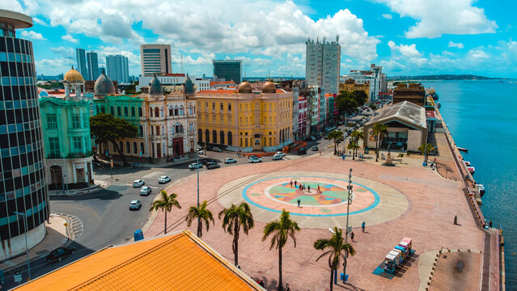
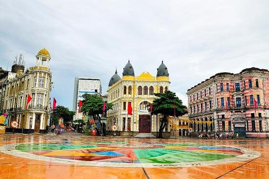
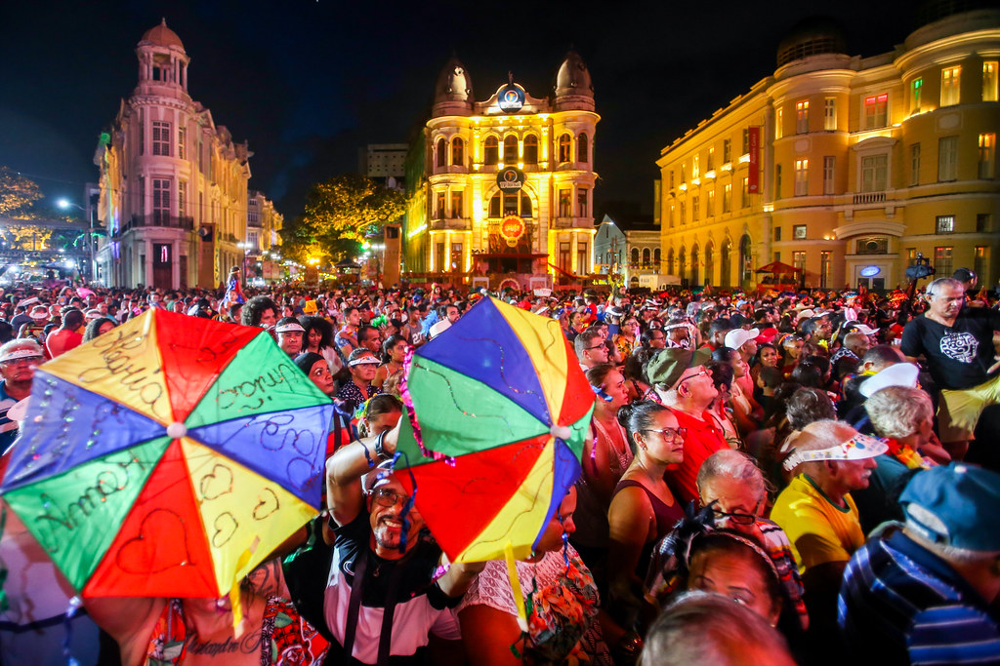

Sobre o Marco Zero

O Marco Zero é um dos pontos turísticos mais emblemáticos da cidade do Recife, localizado no Bairro do Recife Antigo. Este local representa o ponto de origem da cidade e possui uma importância histórica e cultural inigualável.
Características Principais
Algumas características importantes do Marco Zero incluem:
- Localização estratégica no centro histórico da cidade
- Símbolo da fundação do Recife no século XVI
- Ponto de referência para medição de distâncias

Atrações Próximas
O Marco Zero é cercado por pontos de interesse que complementam a experiência turística. Alguns destaques são:
- Paço do Frevo: Um museu dedicado à celebração do frevo, patrimônio cultural de Pernambuco.
- Centro de Artesanato de Pernambuco: Local perfeito para comprar lembranças típicas da região.
- Parque de Esculturas Francisco Brennand: Uma obra icônica visível do Marco Zero, localizada no mar.
História e Curiosidades
O Marco Zero foi oficialmente estabelecido no século XX, embora o local já fosse utilizado como referência desde os primórdios da cidade. É considerado um marco não apenas geográfico, mas também cultural e social.
Curiosidade: Sabia que o Marco Zero é o ponto de partida de diversas rotas rodoviárias que cortam o estado de Pernambuco?

Eventos e Cultura
O espaço é palco de diversos eventos culturais, incluindo shows, feiras de artesanato e celebrações como o Carnaval do Recife, onde a cidade vibra com energia e música.
